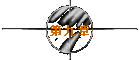
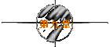

※第一次的亲密接触※
written by jht.

然而却有她寄给我的一封mail..
※
发信人： FlyinDance (轻舞飞扬)
标 题： 1998/01/01
日 期： Thu Jan 1 10:43:29 1998
Dear jht：
原本只是想在黑暗中沉淀自己的思绪..仔细品味我们共同拥有的回忆..
没想到在一片黑暗中..我只感受到孤寂..
尤其当听到你野狼机车的呼啸声愈来愈远时..我不争气的眼泪又再度滑落..
痞子..你能体会我的孤单吗？..
我还是无法克服长久以来的习惯，所以我在三点一刻时偷偷用guest上
了线..
不怪我吧!?..:P
我Query一下你..你果然不在线上..
该庆幸我对你的信任不是一厢情愿？..还是该叹息呢？..
天已经亮了..嗯..是该离开的时候了..
应该带点跟你有关的东西..就带著那张电影票根吧！..
然后呢？..我想带的带不走..不该带的却甩不脱..
你收到这封mail的同时，我应该正在远航往台北的班机上..
你能感受到我在一万尺的高空中对你微笑吗？..:)
也许今天的飞机无法爬升到一万尺，因为我的心情很沉重..:(
去看我信箱中的mail吧！..那记录著我们相识以来的点点滴滴..
还有我在BBS写的日记..说是日记..好像有点不妥..
因为我只在几个特别的日子里记录心情而已..
请你按照顺序阅读，读完后或删或留..决定权在你..
因为我大概没有机会上线了..
密码是我的生日..19760315..去看看吧！..
FlyinDance
ps. 痞子..别发呆了..快去！....
没想到她连我的发呆都算得出来..果然是S型的女孩子..
我赶紧以FlyinDance上了线..
信箱中的mail只有jht和FlyinDance这两个ID为发信人..
我没有心情去看我以前寄的mail..直接去看她的第一篇BBS日记..
※
发信人： FlyinDance (轻舞飞扬)
标 题： 1997/09/18
日 期： Thu Sep 18 23:22:47 1997
今天是开学的第一天..
可耻的成大..竟然选择这个九一八事变发生日开学..
摆明了不尊重惨遭日军屠杀的同胞嘛！..
为了纪念无辜受害的同胞..我今天特地翘课一天以表示哀悼..
我在榕园内坐著..觉得很无聊..乾脆就在校园里逛了起来..
我穿过地下道..来到属于工学院地盘的成功校区..
走在“工学院路”上..两旁的树既雄伟又俊美..阳光从树叶间轻轻洒了下来..
这种温柔的阳光是我所能享受的极限..我不禁哼著歌..轻轻舞动了起来..
而这里的男生则充满了朝气..有别于文学院男生的书卷气息..
资讯大楼看起来蛮壮观的..给它个面子..本姑娘大驾光临也..:)
一大堆人在玩BBS..我也去凑个热闹..并在成大资研站注册个新ID..
自从本姑娘的出现推翻了“网路无美女”的定律后..
以前的ID就常遭很多无聊的男性ID骚扰..:(
每次上线..信箱里就有一堆mail..内容都是想跟我交个朋友..
有的炫耀文笔..有的自以为幽默..有的假装诚恳..有的故作潇洒..
哼！..我才不稀罕ㄌㄟ..:~
这都怪室友小雯啦！..每次去见网友都要拉我去..
她说这叫分担风险..免得她被一大堆青蛙吓到..结果被吓到的反而是我..
在网路上..男生称霉女为恐龙..女生则称菌男为青蛙..
男生说“网路无美女”..女生则反驳说“网路青蛙满地爬”..
偏偏有些青蛙还自以为是王子..巴望得到公主一吻而变回王子..
小雯说青蛙就是青蛙..即使美女陪他上床睡觉..他也还是青蛙..:)
那么该换个什么样的ID跟昵称呢？..
想起刚刚在工学院路上的轻舞..愉悦的心情又再度浮现..年轻真好..：）
就叫作“轻舞飞扬”好了..ID则为FlyinDance..I am Flying in Dancing！..
我也以这种心情为蓝本..写下了我的plan..希望我永远年轻而飞扬..
今天真好..离开教室是对的..:P
※
发信人： FlyinDance (轻舞飞扬)
标 题： 1997/09/22
日 期： Mon Sep 22 23:14:52 1997
小雯晚上又跑出去约会了..留下我一个人看著电视..:(
电视新闻说陈进兴在永和与警方对峙..
结果双方不开一枪一弹..而且还让他逃脱..
幸好我不在永和的家中..不然我今晚一定会睡不著觉..
我上了线..新ID新气象..到各板去晃晃..
我还跑到从不去逛的mantalk板..听听青蛙们的叫声..
有篇文章蛮有意思的..我留意了一下作者..他叫jht..
真逊！..什么ID嘛！..j、h、t三个字母没有一个是母音..多难念ㄚ！..
我是念外文的..实在无法忍受这种英文程度近乎无知的ID..
而他的昵称更是白痴..竟然叫“痞子蔡”！..逊加est..
小雯说青蛙的昵称若好听则未必是好..但如果难听的话就一定是坏..
所以我想他一定是只癞蛤蟆..
偷偷去Query一下他的plan..却看出了趣味..
他说：“如果把整个太平洋的水倒出，也浇不熄我对你爱情的火焰。
整个太平洋的水全部倒得出吗？..不行。
所以我并不爱你。”..
如果让小雯看到的话..一定会说他在放屁..
但我是淑女..所以我保留不说脏话的权利..
这家伙是个怎样的人呢？..真的是痞子？..还是只是个英文白痴？..
为什么他有天使般的文笔..却有魔鬼般的昵称呢？..
我到处去找他的文章..这只癞蛤蟆蛮会跳的..很多板都有他的文章..
Letter板..Story板..Baseball板..甚至还跑到恐龙大本营的Ladytalk板来鬼叫..
难道不怕被恐龙一脚踩扁？..
反正也是无聊..于是我mail给他..告诉他我觉得他的plan很有趣..:~
在结束今天的日记前..我心里一直纳闷著..
因为这是我第一次主动mail给一个完全陌生的ID..
我为什么会有这种勇气跟冲动呢？..被小雯带坏吗？..
真的只是因为我“反正也是无聊”的缘故吗？..
※
发信人： FlyinDance (轻舞飞扬)
标 题： 1997/09/30
日 期： Tue Sep 30 23:48:06 1997
今天下午跟小雯到东丰路那家“翡冷翠”喝下午茶..
气氛很舒服..:)..一楼只有我们两个客人..
我点了一杯有薰衣草风味的茶..真是难得难得..
因为我超爱喝咖啡的..从未在下午茶的时间里真的喝茶..
大概是被店员殷勤且具说服力的一番话所影响吧！..
晚上上线时，收到了属于FlyinDance的第一封处女mail..
是那个英文白痴的癞蛤蟆jht寄来的..
他说他等了几天.希望能在线上碰到我..奈何天不从人愿..只好含恨寄mail..
天怎会不从人愿？..也许是老天比较听我的话ㄛ！..:P
他说为了证明我有先见之明..他会努力训练自己成为一个有趣的人..
训练？..有趣能用训练的吗？..看来他的脑袋有问题..
真可怜..身为一个研究生却没有智商和英文程度时..的确值得同情..:)
不过他的mail跟他在板上的post..有很大的差异..
他的post非常阳刚..往往是一针见血而不留馀地..
但他的mail..却有种温柔纤细的味道..好像是？..好像是？..
好像是下午的那杯薰衣草花茶..
※
发信人： FlyinDance (轻舞飞扬)
标 题： 1997/10/05
日 期： Sun Oct 5 23:50:35 1997
难得的一个假日..更难得的是..小雯今天竟然没有约会！..
我和她到新光三越百货去逛逛..因为13楼有皮包特卖会..
午餐也在三越解决..韩国式豆腐辣汤面..辣得小雯流出了眼泪..
她说辣妹实在不应该再吃辣..不然就会辣上加辣..未辣人先辣己..
我看上了一个咖啡色的背包..它的颜色、装饰品与外型..
让我联想到Cappuccino咖啡..我毫不犹豫地买下了它..
背上了这个背包..就像啜饮一杯甘醇甜美却又浓郁强烈的Cappuccino咖啡..
嗯..真好..:)..有点像谈恋爱的感觉..不是吗？..:P
资研从10/1晚上就开始当了..该不会是故意抗议共匪的国庆日吧!?..
一直当到昨天晚上才恢复正常..
这三天中..我千方百计地想连上资研..
资研有宝吗？..我又没有得到BBS症候群..为何非得上线呢？..
即使想看文章..到别站就好了ㄚ！..为何一定要上资研呢？..
难道只因为资研有jht这只癞蛤蟆？..
今天终于收到他寄的第二封mail..我有如获至宝的感觉..
待续
| 


 
